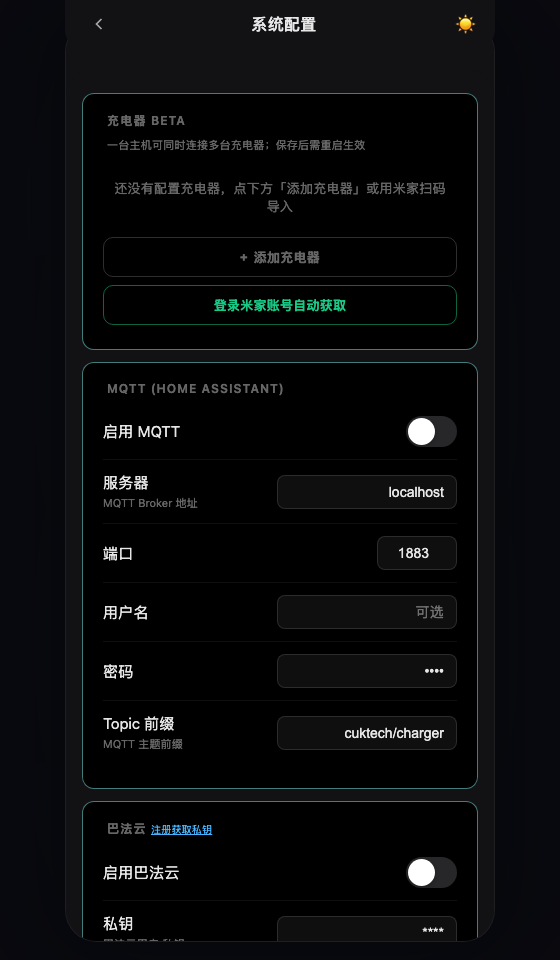
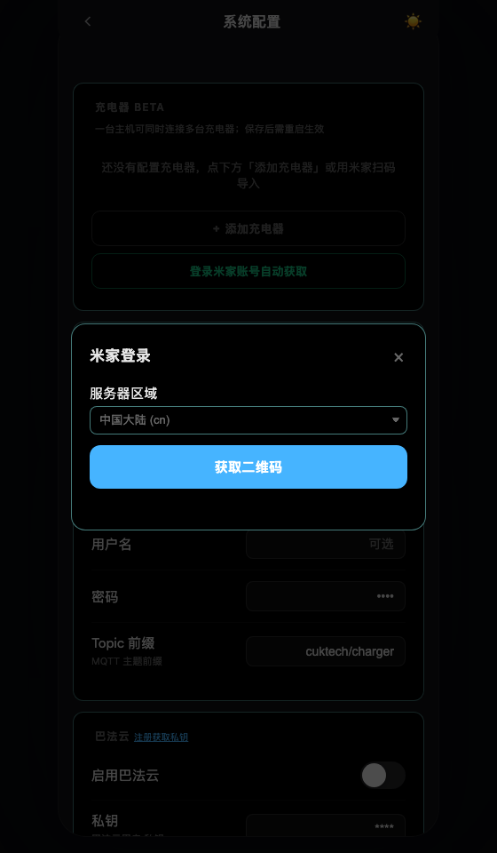
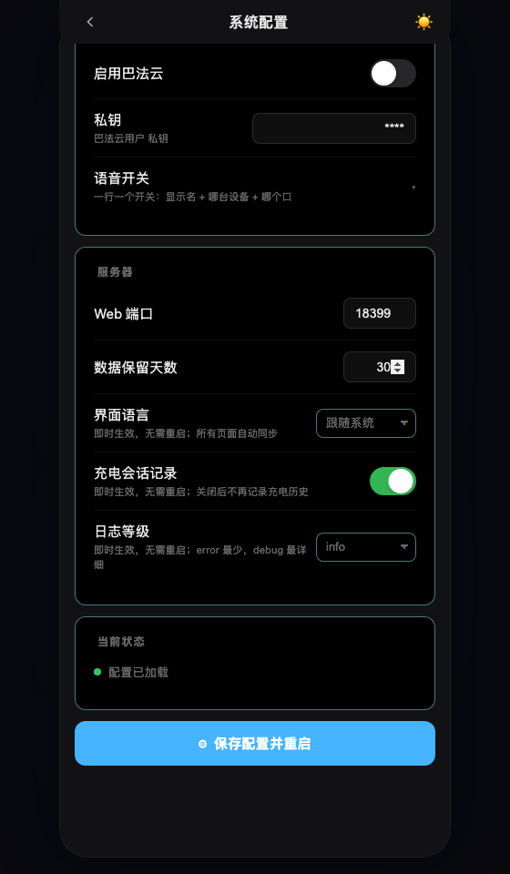
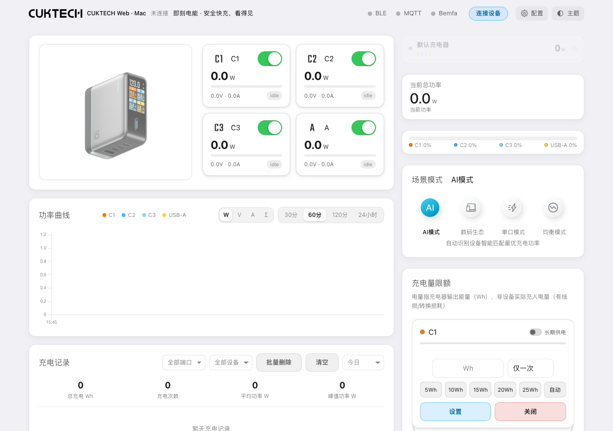

CUKTECH WEB · MACOS
充电助手，快速上手。
在 Mac 上查看酷态科充电器的实时功率、控制端口、记录充电过程。首次按下面 7 步操作，以后直接双击启动。
① 准备② 安装③ 启动④ 米家导入⑤ 保存连接⑥ 使用⑦ 停止
1
准备好充电器和米家 App
- 充电器接通电源，放在 Mac 附近，打开 Mac 蓝牙。
- 用自己的米家账号，在手机 App 中添加这台充电器。
- 打开桌面上的
cuktech-web-mac文件夹。
2
安装运行环境
双击 安装环境.command，看到“安装完成”后关闭窗口。
首次使用请运行安装入口。换电脑需要重新安装；若提示缺少 Python，先从 Python 官网安装 Python 3.11 或更新版本，再运行安装入口。
3
双击应用，打开配置页
双击 启动助手.command。源码仓库不包含应用二进制；如需 CUKTECH Station.app，先运行 bash macos/build_app.sh 构建。首次启动会自动打开配置页。
没有自动打开时，访问 http://127.0.0.1:18299/config.html。
应用在后台运行；使用
.command 入口时，保持启动终端打开。首次蓝牙权限请求点“允许”。误拒绝时，前往“系统设置 → 隐私与安全性 → 蓝牙”，允许启动器、终端或实际运行的 Python，再重新启动。4
用自己的米家账号导入设备
- 点击「充电器」卡片下方的 登录米家账号自动获取。
- 选择与米家 App 一致的区域，国内账号通常选“中国大陆”。
- 点击 获取二维码，用手机米家 App 的扫一扫扫描，并确认登录。
- 在手机上确认登录后，页面会自动进入设备清单；也可点击 已完成扫码 立即查询。
- 勾选充电器，点击弹窗底部的导入按钮；按需同步设备名称。
- 导入成功会提示「已添加」，并自动保存、重启服务，随后自动回到主页；等主页恢复即可使用。




5
保存配置，等待蓝牙连接
- 导入的设备在导入时已自动保存，卡片里的设备信息可以直接核对。
- 只在 Mac 本机使用时，MQTT、巴法云保持关闭。
- 之后又改了 MQTT、巴法云或端口等设置，再滚到配置页底部点击 保存配置并重启。
- 页面恢复后，打开 主控制台。
- 退出手机米家中该设备的控制页，停止其他蓝牙控制程序，等待约 30–60 秒。未自动连接时，点击主页 连接设备。
只有手动改过的其他设置才需要点保存。 米家导入会自己保存；但改了 MQTT / 巴法云 / 端口后不保存，刷新页面会丢失。


6
在主页查看和控制
| 想做什么 | 怎么操作 |
|---|---|
| 看端口功率 | 查看 C1、C2、C3、A 卡片的 W、V、A 数值。 |
| 开关端口 | 点击对应端口卡片右上角的开关。 |
| 看功率变化 | 在“功率曲线”选择端口和时间范围。 |
| 看历史、导出 | 在“充电记录”选择日期，点开一条记录；详情中可导出 CSV。 |
| 定时关闭 | 在“倒计时设置”中选端口、输入分钟，再点击设置。 |

关闭端口会中断该口供电，请先确认接的是哪台设备。记录期间保持 Mac 唤醒，合盖或休眠会影响蓝牙连接与记录。
7
结束时，停止服务
双击 停止服务.command，或在启动终端按 Control+C。
下次直接双击应用即可；无需重新安装或扫码。仅关闭浏览器页面不会停止服务。
遇到问题，看这里
| 脚本不能双击 | 终端输入 bash ，把对应的 .command 拖入终端，再按回车。 |
| 提示端口占用 | 停止占用程序，或修改 runtime/config.yaml 的 server.port，重新启动。双击“查看状态”可看最新地址。 |
| 扫码后没有设备 | 检查米家账号、区域，以及该设备是否已添加到这个账号。 |
| 一直显示未连接 | 检查蓝牙授权与距离，退出其他控制程序，再停止并重新启动助手。 |
| 设备重新配对过 | 在配置页重新扫码导入，再保存重启。 |
本机配置、历史与日志将在首次运行后保存在 runtime 文件夹，该目录不随源码发布。发布包不含任何设备配置、账号、历史或日志。
基于 CUKTECH-BLE-HA 改造，非官方客户端。可选的 HA、ESP32 说明保留在源码目录中。纯文字版 · 项目说明
基于 CUKTECH-BLE-HA 改造，非官方客户端。可选的 HA、ESP32 说明保留在源码目录中。纯文字版 · 项目说明
管理设备与切换账号
- 重命名：配置页 → 设备卡片「编辑」→ 修改设备名称 → 保存配置并重启。清空名称可恢复默认名称。
- 删除：设备卡片「删除」→ 确认 → 保存配置并重启。主设备可删除，下一台自动接替；全部删除后仍可重新添加。
- 切换账号：登录米家账号自动获取 → 切换账号 → 选择区域并重新扫码。已添加设备保留；设备删除仅影响本项目，不会解绑米家中的设备。